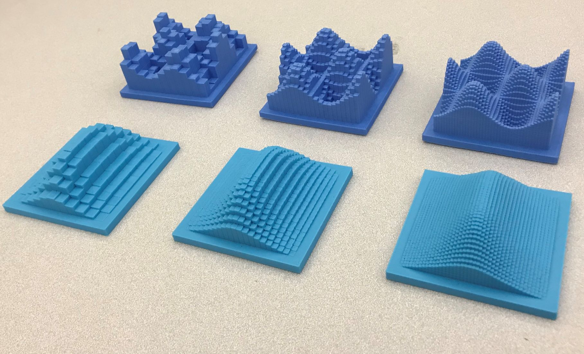
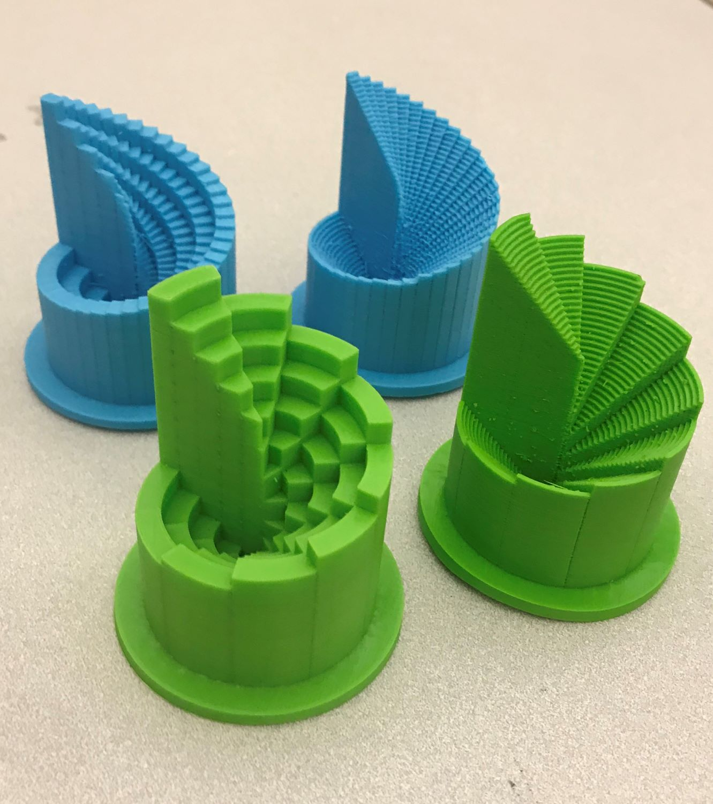
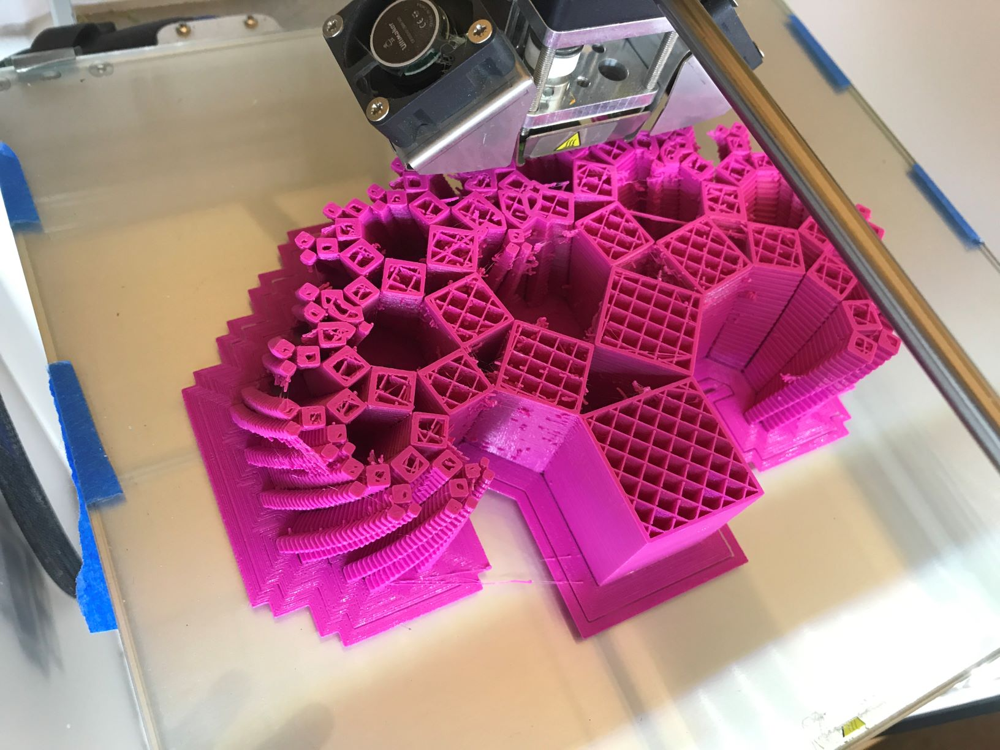
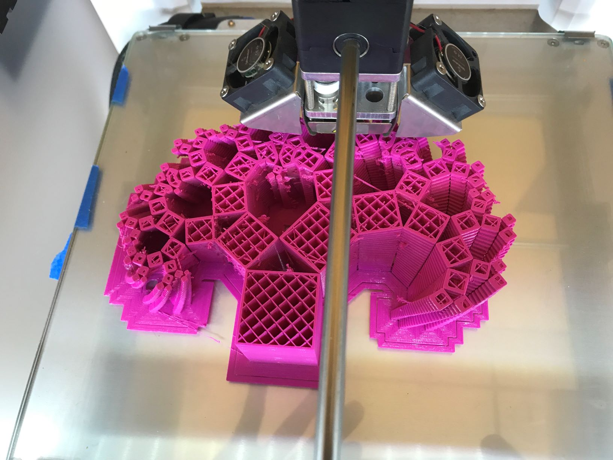
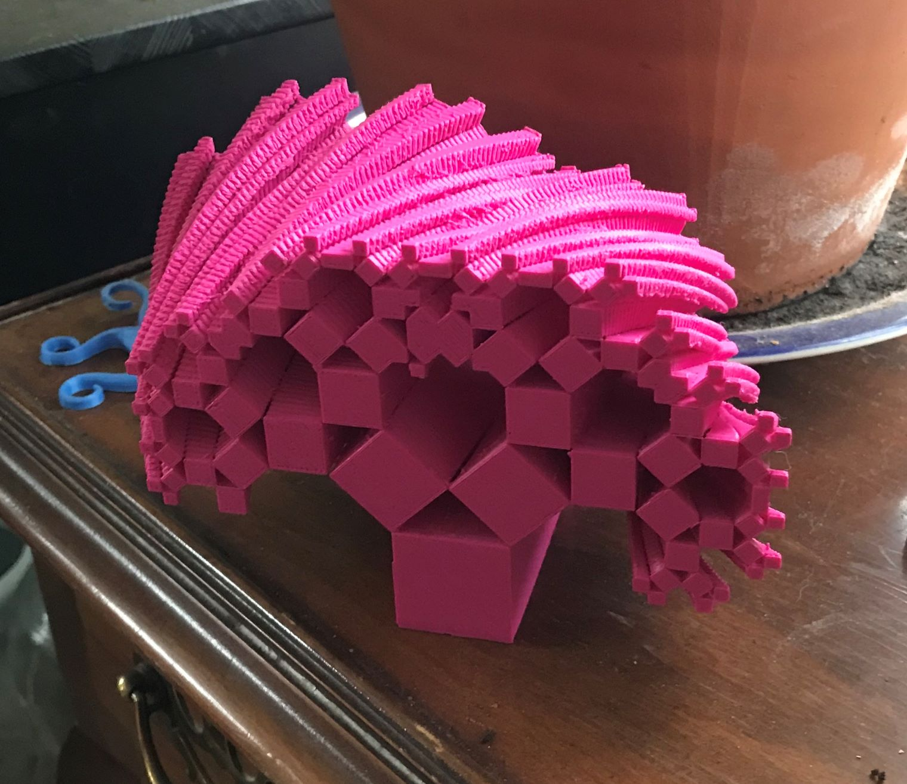
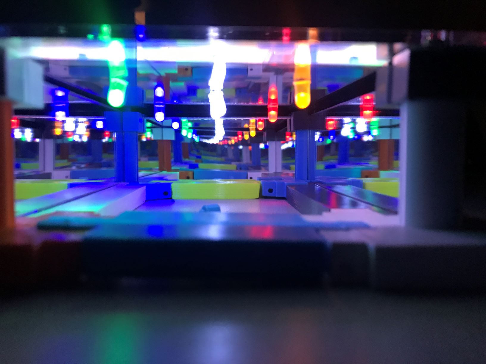

Digital Fabrication
I am currently working at ICERM as a postdoc in the Illustrating Mathmetics program. I also managed the digital fabrication lab at the Washington Experimental Math Lab. We have two 3d printers, a laser cutter, 3d mapping camera, 3d modelling software, arduino setup, and much much more. If you are interested in learning how to use any of this technology, or would like something visualized for research or teaching, please contact me!! Here is a selection of projects!3d printed Riemann Sums, cartesian and polar coordinates


3d printed deformations of the Pythagorean tree fractal


Nonabelian SET
Hsu, Ostroff, and Van Meter, generalized the popular game of SET to a general nonabelian group: see more here. I have started putting it online using javascript, and adding color. The goal is to compose elements of nonabelian groups to get the identity.
Visualizing functions on the p-adic numbers
I've built a few tools for visualizing both the topology and arithmetic of the p-adic numbers. They are both works in progress, but fun to play about with:
- Circular Model: The distance of a point from the center is it's p-adic absolute value.
- Cantor Set Model: Here we see the Cantor set topology, small things tending further to the right.
Orbits of lattice points under matrix groups actions


The distribution of primes less than 3500

Infinity rooms!

Making an infinity mirror.

Engraving fractals with the laser cutter.